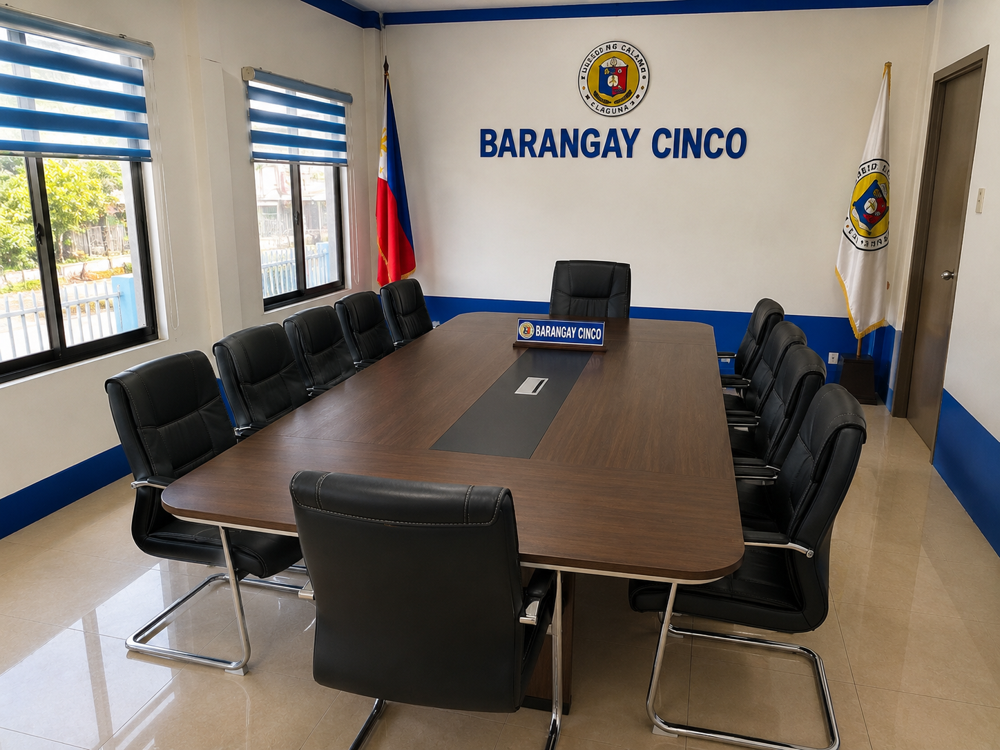
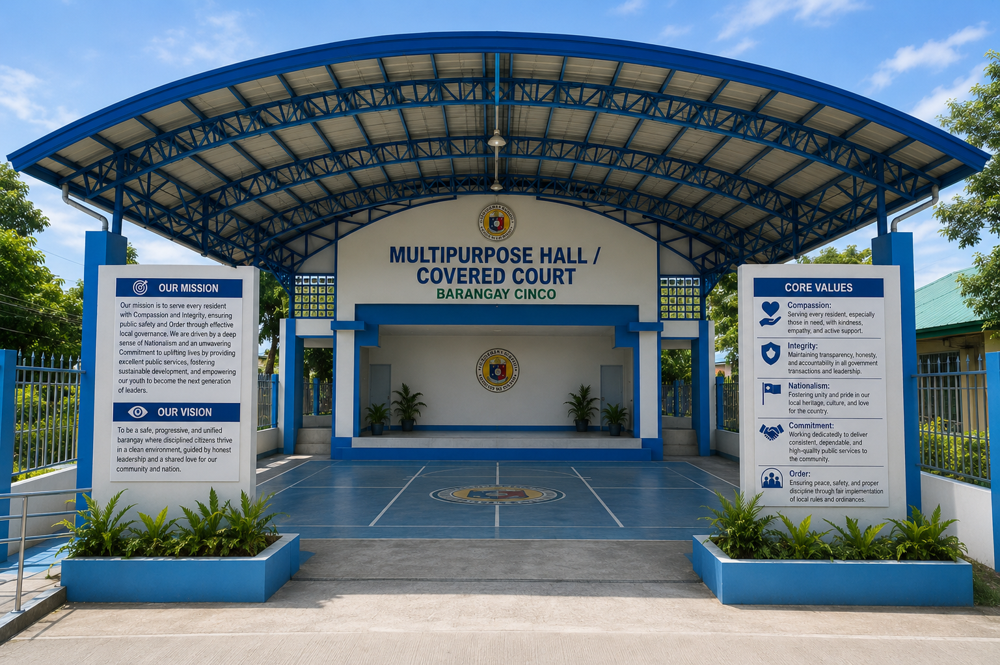
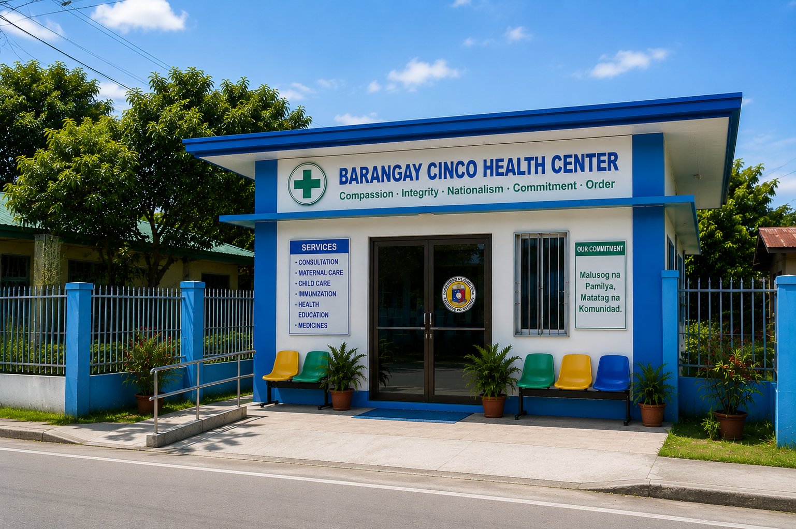
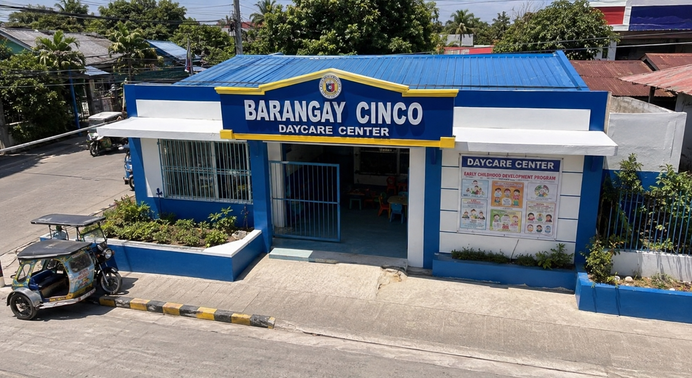
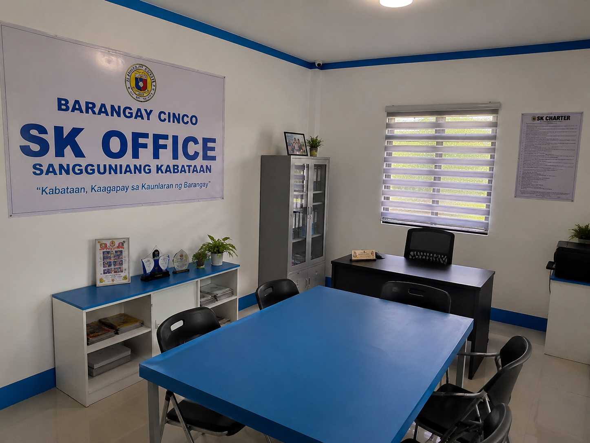

Long before we transformed into a bustling modern community, the land where our barangay stands was a vast green space full of nature. Originally established as a small, quiet village reliant on agriculture and local trade, the community worked together closely, showing the true spirit of bayanihan by helping out its neighbors. This growth turned our quiet provincial village into a busy and lively neighborhood where more people moved and migrated to live and work.

Welcome to Barangay CINCO
A Centrailized Digital Hub for Community Connectivity and Services
Our Story
A Humble Beginning
Heritage
Growth, Resilience, and Progress
As years went by, our barangay faced many changes and challenges. We went through tough times, like strong typhoons and economic problems, but the people never gave up and always worked together to rebuild. Soon, the dirt roads were paved, schools were built, and small local businesses started opening up everywhere. This growth turned our quiet provincial village into a busy and lively neighborhood.
Today
Present Day and Moving Forward
Today, our barangay stands proudly as a dynamic and inclusive community that balances rapid modernization with a deep respect for its historical roots. Under a succession of dedicated local leaders, the barangay has continually upgraded its infrastructure, digital capabilities, and public services to meet the demands of the modern day. While the landscape has evolved from fields to thriving residential and commercial spaces, the core values of Compassion, Integrity, Nationalism, Commitment, and Order continue to guide the barangay toward a bright and sustainable future.
Our Mission
To serve every resident with Compassion and Integrity, ensuring public safety and Order through effective local governance. We are driven by a deep sense of Nationalism and an unwavering Commitment to uplifting lives by providing excellent public services, fostering sustainable development, and empowering our youth to become the next generation of leaders.
Our Vision
To be a safe, progressive, and unified barangay where disciplined citizens thrive in a clean environment, guided by honest leadership and a shared love for our community and nation.
Core Values
Compassion
Serving every resident, especially those in need, with kindness, empathy, and active support.
Integrity
Maintaining transparency, honesty, and accountability in all government transactions and leadership.
Nationalism
Fostering unity and pride in our local heritage, culture, and love for the country.
Commitment
Working dedicatedly to deliver consistent, dependable, and high-quality public services.
Order
Ensuring peace, safety, and proper discipline through fair implementation of local rules and ordinances.
Find Us
📍 Location & Geography
Barangay CINCO is strategically located at the heart of Bacoor City, Cavite, providing residents with easy access to services.
Infrastructure
Community Facilities







5,420
Population
1,205
Households
6
Puroks
* Data based on the latest official local community census and demographic surveys. Figures are updated periodically to ensure accurate resource allocation and public service mapping.